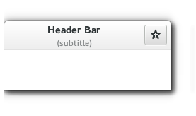

Gtk.HeaderBar¶
Example¶

- Subclasses:
None
Methods¶
- Inherited:
Gtk.Container (35), Gtk.Widget (278), GObject.Object (37), Gtk.Buildable (10)
- Structs:
Gtk.ContainerClass (5), Gtk.WidgetClass (12), GObject.ObjectClass (5)
class |
|
|
|
|
|
|
|
|
|
|
|
|
|
|
|
|
|
|
|
|
Virtual Methods¶
Properties¶
- Inherited:
Name |
Type |
Flags |
Short Description |
|---|---|---|---|
r/w |
Custom title widget to display |
||
r/w |
The layout for window decorations |
||
r/w |
Whether the decoration-layout property has been set |
||
r/w/en |
Whether to reserve space for a subtitle |
||
r/w/en |
Whether to show window decorations |
||
r/w/en |
The amount of space between children |
||
r/w |
The subtitle to display |
||
r/w |
The title to display |
Child Properties¶
Name |
Type |
Default |
Flags |
Short Description |
|---|---|---|---|---|
|
r/w |
A |
||
|
|
r/w |
The index of the child in the parent |
Style Properties¶
- Inherited:
Signals¶
- Inherited:
Fields¶
- Inherited:
Name |
Type |
Access |
Description |
|---|---|---|---|
container |
r |
Class Details¶
- class Gtk.HeaderBar(**kwargs)¶
- Bases:
- Abstract:
No
- Structure:
Gtk.HeaderBaris similar to a horizontalGtk.Box. It allows children to be placed at the start or the end. In addition, it allows a title and subtitle to be displayed. The title will be centered with respect to the width of the box, even if the children at either side take up different amounts of space. The height of the titlebar will be set to provide sufficient space for the subtitle, even if none is currently set. If a subtitle is not needed, the space reservation can be turned off withGtk.HeaderBar.set_has_subtitle().Gtk.HeaderBarcan add typical window frame controls, such as minimize, maximize and close buttons, or the window icon.For these reasons,
Gtk.HeaderBaris the natural choice for use as the custom titlebar widget of aGtk.Window(seeGtk.Window.set_titlebar()), as it gives features typical of titlebars while allowing the addition of child widgets.- classmethod new()[source]¶
- Returns:
a new
Gtk.HeaderBar- Return type:
Creates a new
Gtk.HeaderBarwidget.New in version 3.10.
- get_custom_title()[source]¶
- Returns:
the custom title widget of the header, or
Noneif none has been set explicitly.- Return type:
Gtk.WidgetorNone
Retrieves the custom title widget of the header. See
Gtk.HeaderBar.set_custom_title().New in version 3.10.
- get_decoration_layout()[source]¶
- Returns:
the decoration layout
- Return type:
Gets the decoration layout set with
Gtk.HeaderBar.set_decoration_layout().New in version 3.12.
- get_has_subtitle()[source]¶
-
Retrieves whether the header bar reserves space for a subtitle, regardless if one is currently set or not.
New in version 3.12.
- get_show_close_button()[source]¶
-
Returns whether this header bar shows the standard window decorations.
New in version 3.10.
- get_subtitle()[source]¶
- Returns:
the subtitle of the header, or
Noneif none has been set explicitly. The returned string is owned by the widget and must not be modified or freed.- Return type:
Retrieves the subtitle of the header. See
Gtk.HeaderBar.set_subtitle().New in version 3.10.
- get_title()[source]¶
- Returns:
the title of the header, or
Noneif none has been set explicitly. The returned string is owned by the widget and must not be modified or freed.- Return type:
Retrieves the title of the header. See
Gtk.HeaderBar.set_title().New in version 3.10.
- pack_end(child)[source]¶
- Parameters:
child (
Gtk.Widget) – theGtk.Widgetto be added to self
Adds child to self, packed with reference to the end of the self.
New in version 3.10.
- pack_start(child)[source]¶
- Parameters:
child (
Gtk.Widget) – theGtk.Widgetto be added to self
Adds child to self, packed with reference to the start of the self.
New in version 3.10.
- set_custom_title(title_widget)[source]¶
- Parameters:
title_widget (
Gtk.WidgetorNone) – a custom widget to use for a title
Sets a custom title for the
Gtk.HeaderBar.The title should help a user identify the current view. This supersedes any title set by
Gtk.HeaderBar.set_title() orGtk.HeaderBar.set_subtitle(). To achieve the same style as the builtin title and subtitle, use the “title” and “subtitle” style classes.You should set the custom title to
None, for the header title label to be visible again.New in version 3.10.
- set_decoration_layout(layout)[source]¶
-
Sets the decoration layout for this header bar, overriding the
Gtk.Settings:gtk-decoration-layoutsetting.There can be valid reasons for overriding the setting, such as a header bar design that does not allow for buttons to take room on the right, or only offers room for a single close button. Split header bars are another example for overriding the setting.
The format of the string is button names, separated by commas. A colon separates the buttons that should appear on the left from those on the right. Recognized button names are minimize, maximize, close, icon (the window icon) and menu (a menu button for the fallback app menu).
For example, “menu:minimize,maximize,close” specifies a menu on the left, and minimize, maximize and close buttons on the right.
New in version 3.12.
- set_has_subtitle(setting)[source]¶
-
Sets whether the header bar should reserve space for a subtitle, even if none is currently set.
New in version 3.12.
- set_show_close_button(setting)[source]¶
-
Sets whether this header bar shows the standard window decorations, including close, maximize, and minimize.
New in version 3.10.
- set_subtitle(subtitle)[source]¶
-
Sets the subtitle of the
Gtk.HeaderBar. The title should give a user an additional detail to help him identify the current view.Note that
Gtk.HeaderBarby default reserves room for the subtitle, even if none is currently set. If this is not desired, set theGtk.HeaderBar:has-subtitleproperty toFalse.New in version 3.10.
Property Details¶
- Gtk.HeaderBar.props.custom_title¶
- Name:
custom-title- Type:
- Default Value:
- Flags:
Custom title widget to display
- Gtk.HeaderBar.props.decoration_layout¶
-
The decoration layout for buttons. If this property is not set, the
Gtk.Settings:gtk-decoration-layoutsetting is used.See
Gtk.HeaderBar.set_decoration_layout() for information about the format of this string.New in version 3.12.
- Gtk.HeaderBar.props.decoration_layout_set¶
-
Set to
TrueifGtk.HeaderBar:decoration-layoutis set.New in version 3.12.
- Gtk.HeaderBar.props.has_subtitle¶
- Name:
has-subtitle- Type:
- Default Value:
- Flags:
If
True, reserve space for a subtitle, even if none is currently set.New in version 3.12.
- Gtk.HeaderBar.props.show_close_button¶
- Name:
show-close-button- Type:
- Default Value:
- Flags:
Whether to show window decorations.
Which buttons are actually shown and where is determined by the
Gtk.HeaderBar:decoration-layoutproperty, and by the state of the window (e.g. a close button will not be shown if the window can’t be closed).
- Gtk.HeaderBar.props.spacing¶
- Name:
spacing- Type:
- Default Value:
6- Flags:
The amount of space between children
- Gtk.HeaderBar.props.subtitle¶
-
The subtitle to display